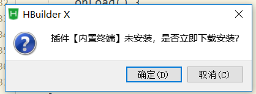

原文连接:https://www.cnblogs.com/suvvm/p/11336954.html
HBuilderX使用Vant组件库
HBuilderX是一款由国人开发的开发工具，其官网称其为轻如编辑器、强如IDE的合体版本。但是官方的社区中关于Vant组件的安装大多都是针对微信小程序开发安装Vant Weapp，鄙人尝试了各种方法，经历各种错误后终于成功安装vant组件库，在这里分享一下使用HBuilderX进行vue.js开发时安装Vant组件库的经验，使用的版本为2019.08.10更新的2.2.0版本。
本篇所有操作建立在操作系统为windows且已经成功安装配置node.js的基础上。
一、建立uni-app新项目
二、在终端打开项目目录
可以直接在HBuilderX中直接右击项目名称选择‘使用命令行窗口打开目录’，之后会提示插件【内置终端】未安装，选择确定来安装内置终端插件,之后便可以通过内置终端打开对应项目目录，当然也可以直接在windows终端中打开对应目录

之后我将使用内置终端进行操作.
三、初始化项目创建package.json
在终端中执行
npm init之后会让你填写一些如项目名称、版本号之类的项目介绍，如果不知道或者不想填就一路回车。
四、安装Vant组件库
打开有赞vant的官方文档，快速上手中给出了通过npm安装vant的指令，在终端执行它。
npm i vant -S不用管这几个警告
这时按照官方给的引入方式引入组件，我这里图方便直接引入所有组件，在main.js中添加
import Vant from 'vant';
import 'vant/lib/index.css';
Vue.use(Vant);这时我们在pages下index.vue中尝试使用vant组件，这里我用vant的自定义输入框做演示，在index.vue添加如下代码
<van-cell-group>
<van-field
value="{{ username }}"
required
clearable
label="用户名"
icon="question-o"
placeholder="请输入用户名"
bind:click-icon="onClickIcon"
/>
<van-field
value="{{ password }}"
type="password"
label="密码"
placeholder="请输入密码"
required
border="{{ false }}"
/>
</van-cell-group>编译并运行，可以使用其自带的内置浏览器插件，可在工具——插件安装中配置安装，如果安装失败就给管理员权限，之后点击预览就会开始编译项目。

不出意料会出现如下错误
21:11:07.242 Module build failed (from ./node_modules/postcss-loader/src/index.js):
21:11:07.242 SyntaxError
21:11:07.247 (1:5894) Unclosed bracket
21:11:07.248 > 1 | @-webkit-keyframes van-slide-up-enter{0%{-webkit-transform:translate3d(0,100%,0);transform:translate3d(0,100%,0)}}@keyframes van-slide-up-…………………省略巨量……………………… (left,#ff6034,#ee0a24);background:linear-gradient(to right,#ff6034,#ee0a24)}
这是HBuilderX的bug已经过了很多个版本都没有修复，希望官方早日解决。出现这个是因为在main.js中引入vant的样式import 'vant/lib/index.css'时出现了错误。
五、建立一个html的模板文件
删除main.js中错误代码 import 'vant/lib/index.css'，以下方代码作为模板建立model.html
<html lang="zh-CN">
<head>
<meta charset="utf-8">
<meta http-equiv="X-UA-Compatible" content="IE=edge">
<meta name="viewport" content="width=device-width, user-scalable=no, initial-scale=1.0, maximum-scale=1.0, minimum-scale=1.0">
<link rel="stylesheet" href="https://cdn.jsdelivr.net/npm/vant@2.0/lib/index.css">
<title>
<%= htmlWebpackPlugin.options.title %>
</title>
<script>
document.addEventListener('DOMContentLoaded', function() {
document.documentElement.style.fontSize = document.documentElement.clientWidth / 20 + 'px'
})
</script>
<link rel="stylesheet" href="<%= BASE_URL %>static/index.css" />
</head>
<body>
<noscript>
<strong>Please enable JavaScript to continue.</strong>
</noscript>
<div id="app"></div>
<!-- built files will be auto injected -->
</body>
</html>在manifest.json的h5配置中将其作为index.html模板导入
之后遍可以发现错误没了，在浏览器中查看会发现依然没有样式。
六、在对应页面引入vant样式
将
@import 'vant/lib/index.css';
添加至使用vant组件的页面 style块中，这时编译并从浏览器中查看，虽然vant组件样式已经出现，但是有部分样式依旧不准确。
七、安装Vue官方提供的脚手架Vue Cli 3
右击项目名称选择‘使用命令行窗口打开目录执行
npm install -g @vue/cli
之后不出意外便可以获得正确的样式了。